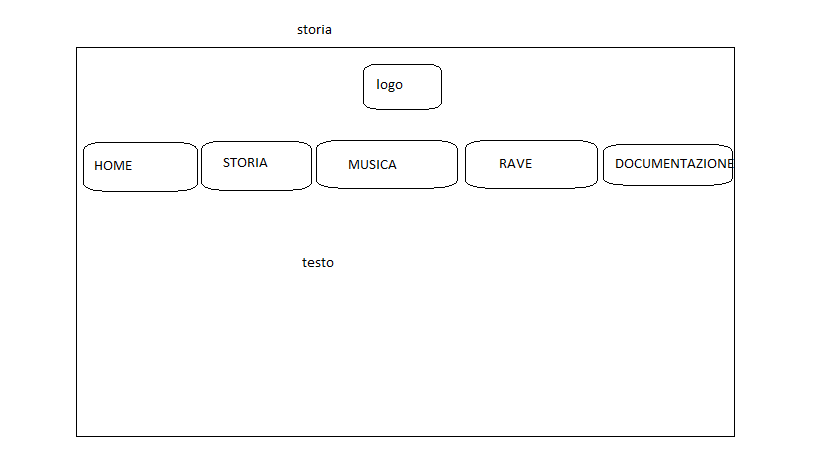
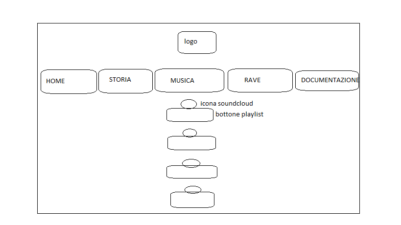
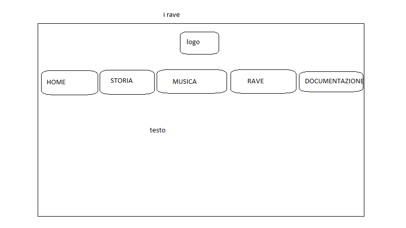

ABSTRACT
Free Tekno è un sito con l'intento di informare sulla musica Tekno, sui rave party e in generale sul movimento Free Tekno.
La mia voglia di informare è data dal fatto che sono un amante della musica Tekno e dei free party.
Inoltre, ritengo sia necessario invitare all'informazione e al rispetto perchè si tratta di un movimento demonizzato dai media e dalla società senza alcuna ragione di esserlo.
Benchmarking
Obiettivi
- Sdoganare i pregiudizi riguardo il movimento FreeTekno e invitare al rispetto e all'informazione
- Inizializzazione alla musica Tekno
- Raggiungere 50 visualizzazioni
Target Utente
Gli utenti a cui ci si vuole riferire sono:
- Utenti che non hanno mai ascoltato musica Tekno e intende inizializzarle tramite l'ascolto e l'informazione di tutto il movimento che c'è dietro la musica.
- Utenti che vogliono informarsi riguardo il movimento Free Tekno.
Competitors
Spulciando sul web ho trovato diversi articoli giornalistici riguardo il movimento Free Tekno ma pochi siti.
Tekno hi-Story e Your Cultu Rave rappresenta sicuramente un competitor che affronta lo stesso tema e offrono servizi molto simili. Ritengo inoltre che il target utente sia lo stesso di Free Tekno poichè tutti e tre i siti hanno come scopo informare.
Struttura e layout
  
L'header contiene il logo su sfondo nero e un menù di navigazione sotto di esso che permette di navigare nella sezione storia, musica e rave.
Nella home, abbiamo come in tutte le altre pagine il Font-Family: 'Noto Sans Mono' ma per la frase "You might stop the party but you can't stop the future abbiamo 'ArcadeClassic'.
In storia e in rave, viene utilizzato 'ArcadeClassic' con colore chartreuse solo per i titoli dei paragrafi e per il resto della pagina viene utilizzato 'Noto Sans Mono'.
Musica invece ha la presenza di 4 bottoni, sia cliccando l'icona SoundCloud sopra ogni bottone, che premendo il bottone stesso, saremo indirizzati a una playlist SoundCloud.
Ogni pagina ha una foto di un free party come body background.
- HTML
- CSS
- Bootstrap
- Fontawesome
L'obiettivo del sito è fare informazione, sensibilizzare e condividere la passione per il movimento Free Tekno.
I gruppi demografici che questo sito ambisce a raggiungere sono i giovani under 35 che possano appassionarsi al movimento o comunque che non diventino vittime della demonizzazione effettuata da media e politica.
La promozione avviene tramite social(Whatsapp) e passaparola.